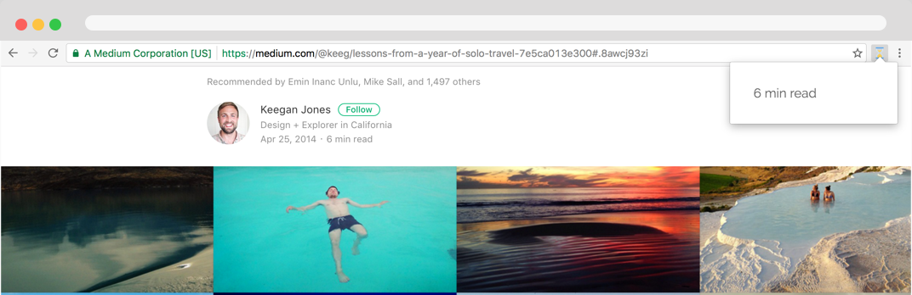

HTML • CSS • JavaScript
Hourglass is a chrome extension I developed over Summer 2016
when I first started programming. I thought it would be a great project after No Connection
to dive deeper into chrome extensions.
This idea was inspired by the Medium blogging platform and their estimated reading time
feature on articles. I really loved how they specified how long it would take to read the
page so users could gauge if they had that length of time before starting to read. I chose
to make a chrome extension specifically since I would often want to know how long it would
take me to read a scientific journal when I was writing lab reports.
In this project, I learned a lot about message passing and data passing between different parts of the chrome extension. The algorithm I used to determine the estimation of time to read the page took the count of words on the page and divided by the average reading speed of a person.
I compared the times against Medium articles and the estimated times were very similar.